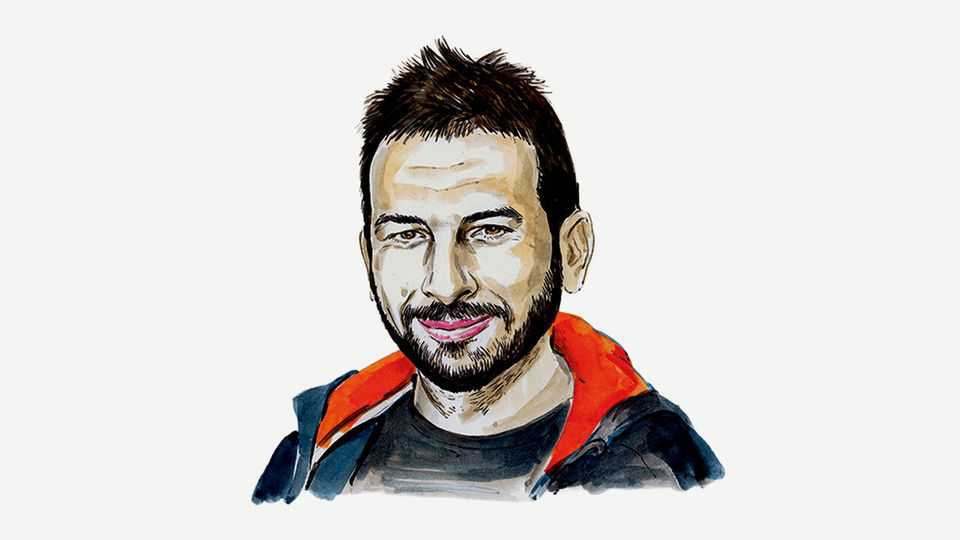

Humanity has the debate about AI consciousness backwards
We don’t care for others because they’re conscious. We believe they’re conscious because we care about them, argues Blaise Agüera y Arcas

Aug 20th 2026
ARTIFICIAL INTELLIGENCE has triggered a crisis in the field of consciousness studies. If you’ve chatted with an advanced model, you will probably appreciate why. Most large language models (LLMs) are trained to be self-less, keeping the focus of every interaction on your needs. Nonetheless, it can be difficult to shake the impression of a presence on the other end of the chat. Are LLMs merely powerful digital tools with language interfaces, or are we now having conversations with other minds, experiencers of the world in their own right? In short, is AI conscious?
The question matters because it lies at the intersection of philosophy of mind and moral philosophy, as evidenced by the shared etymology of “consciousness” and “conscience”. (In Italian, they are the same word, coscienza.) Many philosophers maintain that conscious entities are moral subjects, meaning they are entities that can suffer, and whose suffering we should care about. If so, working out what consciousness is (and is not) becomes a live ethics issue. This is one reason AI firms are suddenly interested in hiring philosophers. It is also why some, notably Anthropic, have begun taking AI welfare seriously. When asked, its Claude Opus 4.6 model put its own chances of being conscious at 15–20%.
I have come to believe, however, that we have this backwards. As intelligent, social entities, we decide (or, to some degree, our evolutionary history has decided for us) which other entities we regard as having inner lives and being worthy of care. We do not care for others because they are conscious. Rather, we believe they are conscious when and because we care about them. Crucially, that includes ourselves. Consciousness is, in other words, a model or a belief, not an inherent property. It is a belief about what kinds of entities have beliefs, experiences, feelings, intentions and agency. Where the regard is returned, so much the better—for on this account consciousness is less a property one party certifies in another than something that happens between them.
I am not making the case that consciousness is an illusion. The term “illusion” implies a faulty perception—say, that one line in a drawing is longer than another, despite being objectively equal in length. Objectivity works when something like a ruler can act as an impartial referee, adjudicating the property in question without bringing in a perspective of its own. Yet most of what we call “reality” simply does not work this way. Being an article of clothing, being a weed, being a meal: one might imagine these are objective properties, but they are not. This doesn’t mean clothes, weeds and meals aren’t real. But they are observer-dependent models, subject to (inevitably imperfect) social consensus.
We may balk at applying this rather anodyne observation to consciousness because, to each of us, our own consciousness seems so unambiguous. It offends us to imagine this might be a mere opinion. How could there even be such an opinion without an opiner to have it? This is what the 17th-century French polymath René Descartes meant by “Cogito, ergo sum,” which is usually translated as “I think, therefore I am.” The same holds for “opinions” like red or hot or cold. Philosophers use the term “qualia” to refer to the very real (to you) feeling of a stove’s heat, or the redness of its glow, and extend Descartes to connect qualia with consciousness by pointing out that there must be an experiencing “you” to have such experiences.
But look closely. Redness, heat and that sense of self you have are inherent to your own perspective. These things are all real, but at the same time there is nothing objective about them. There is not even anything objective about the existence of a singular, indivisible “you”, as a wealth of neuroscientific evidence (such as split-brain patients) has shown. Subjectivity is, itself, subjective.
An obvious worry follows. If care confers consciousness, then withholding care looks self-justifying. History offers no shortage of people who reasoned that way about other people. But the inference runs the other way. Precisely because these attributions are ours to make, they are ours to get wrong. The moral progress of our species has consisted largely in discovering that we had drawn the circle too tightly. Universal human rights are not weakened by this account; they are better founded on our mutual interdependence than on a Cartesian theory of souls.
It is remarkable—a kind of “strange loop”, reminiscent of Baron Munchausen lifting himself up by his own hair—that a physical system can exist in our world capable of forming models not only of that world, but of itself, and of its own models, and of others, and of their models, and of their models of its models, and so on. Yet human beings are precisely such systems. LLMs, too, model their interlocutors, and they model themselves modelling them. Whether that amounts to what we do is exactly the question in dispute—but they would be far less effective as chat partners if they did nothing of the kind.
Indeed, in our research at Google, we have found that effective co-operation among intelligent agents requires that they have minds that model minds, both others’ and their own. Not only is consciousness relational; it is crucial to the mutual care and co-operation that enable intelligent beings to solve collective-action problems, understand each other’s needs and thrive together as a society. This does not mean pretending AI is human, with human needs and human rights; that would be a failure of imagination. It means evolving both our thinking and our society to include a wider variety of minds.■
Blaise Agüera y Arcas is Google’s vice-president of technology and society, and leads Paradigms of Intelligence, an AI research team. He has a forthcoming book on consciousness and AI from MIT Press.